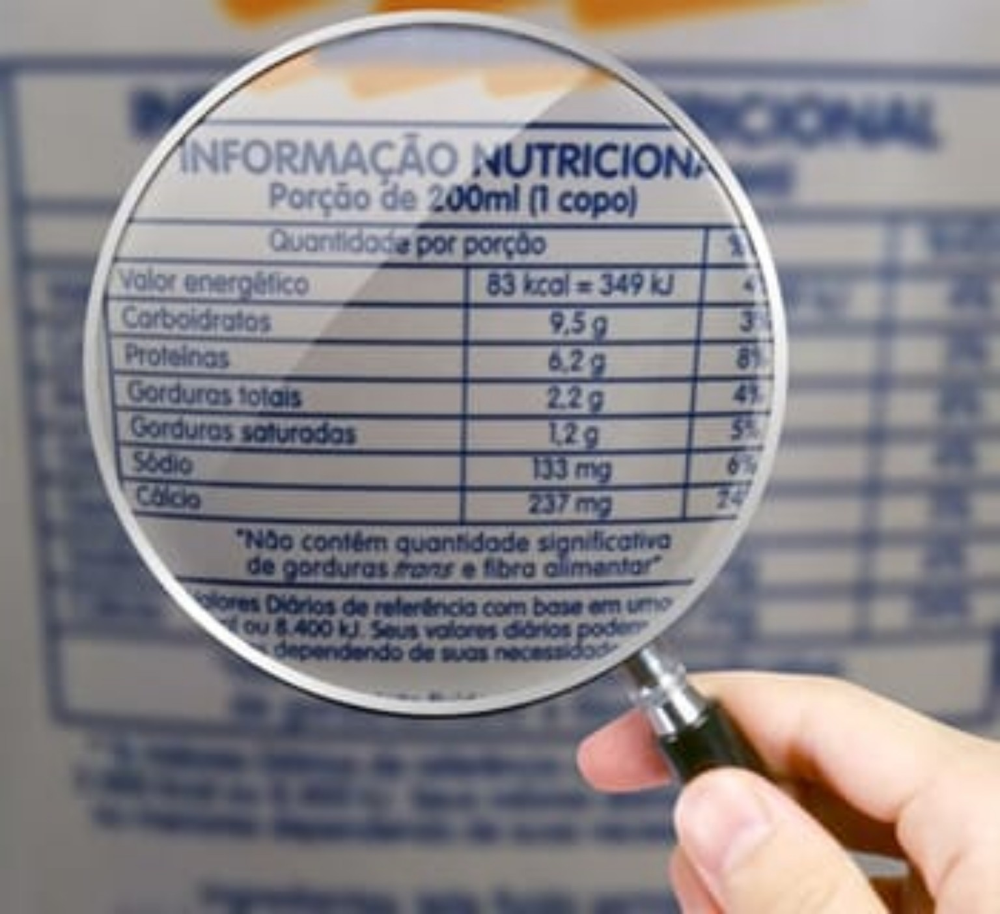

Como ler rótulos de alimentos
Ler rótulos é essencial para entender o que estamos consumindo e fazer escolhas mais saudáveis. As informações presentes nas embalagens ajudam a identificar ingredientes, quantidade de nutrientes e nível de processamento.
1. Lista de ingredientes
Os ingredientes aparecem em ordem decrescente de quantidade: o primeiro é o que mais tem no produto.
Quanto maior a lista, maior a chance de ser um alimento ultraprocessado.
Evite produtos com:
- açúcares adicionados (ex.: sacarose, xarope de glicose, maltodextrina)
- gorduras hidrogenadas
- aditivos em excesso (corantes, aromatizantes, conservantes)
2. Tabela nutricional
A tabela mostra a quantidade de nutrientes por porção.
O que observar:
- Valor energético (kcal) — indica a quantidade de energia.
- Carboidratos — prefira produtos com mais fibras.
- Proteínas — ajudam na saciedade e manutenção muscular.
- Gorduras totais, saturadas e trans — quanto menos, melhor (trans deve ser zero).
- Fibras — mais fibras = melhor qualidade nutricional.
- Sódio — níveis altos aumentam o risco de hipertensão.
Atenção: A porção é definida pelo fabricante e pode não refletir o que você realmente consome.
3. Rotulagem nutricional frontal (ANVISA)
Desde 2022, produtos com excesso de:
- açúcar adicionado
- gordura saturada
- sódio
devem exibir uma lupa preta na parte frontal da embalagem, facilitando a identificação de alimentos menos saudáveis.
4. Açúcares adicionados x açúcares totais
- Açúcares adicionados = colocados durante a fabricação.
- Açúcares totais = incluem os naturais do alimento.
- A nova rotulagem diferencia claramente os dois.
5. Alegações nutricionais
Termos como “light”, “diet”, “zero”, “integral” podem confundir:
- Light: redução de algum nutriente (nem sempre açúcar).
- Zero açúcar: pode ter mais gordura ou sódio.
- Integral: deve ter pelo menos 51% de farinha integral.
6. Dicas rápidas para escolher melhor
- Prefira ingredientes que você reconheça.
- Quanto menos aditivos, melhor.
- Mais fibras e menos sódio = melhor escolha.
- Compare tabelas nutricionais de diferentes marcas.
Referências oficiais utilizadas
- ANVISA – Rotulagem Nutricional Obrigatória
- ANVISA – Nova Rotulagem Nutricional (2022)
- Ministério da Saúde – Guia Alimentar para a População Brasileira (2014)
- Harvard T.H. Chan School of Public Health – Reading Nutrition Labels
← Voltar